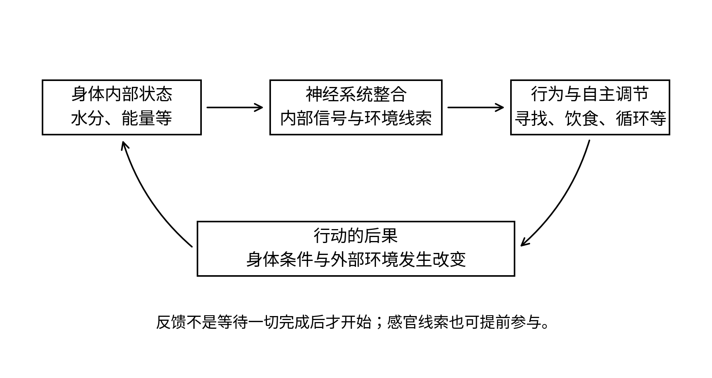
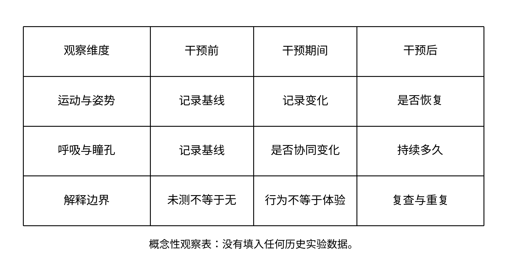
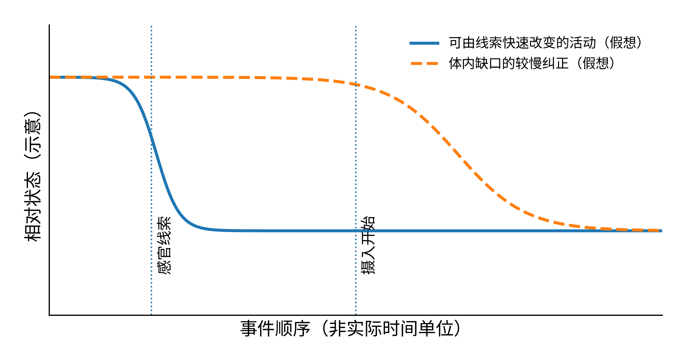
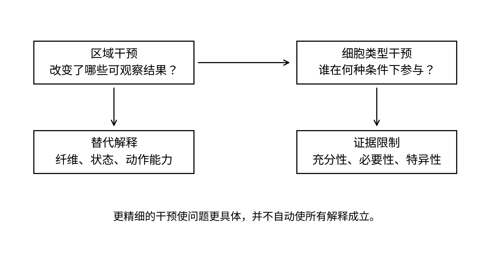

杯子搁下去，水还在晃。我刚挂断母亲的电话，她那句“吃饭了吗”却仿佛还搁在耳边。口袋里只有手机和一本越来越厚的笔记，我想不出一个能向家里解释的地址。窗外的车声渐渐远了，玻璃上忽然有雨。等我再伸手去拿杯子，杯底的形状已经变了，木桌上留下一个擦不掉的水印。
窗外的车声变轻了。再抬头，玻璃另一面已经落着雨。桌上的纸杯变成了一只厚口玻璃杯，杯底留有擦不掉的水痕。一个女人站在门边，手里拿着一块折好的布。她先看我的脸，再看桌上的笔记，问我是不是来帮忙的。我说是。她把布递给我，说先把椅子擦干净，教授不喜欢记录纸放在湿的地方。
这是二十世纪三十年代的苏黎世。女人叫安娜·尧西。后来我在大学保存的材料里读到，她曾经照料赫斯家的孩子，后来长期帮助他记录和整理实验。奖项介绍里的句子很短，只要半行，就能装下一个人二十年的工作。房间里却不是半行。桌上有成摞的纸，有写到一半的表，有等待晾干的器皿，还有她刚刚递给我的布。[12.2]
瓦尔特·鲁道夫·赫斯进门时，没有先看我。他停在动物观察区前，把一扇没有扣好的小门重新扣上。那只猫正低头整理前爪，既不理会他，也不理会我。我站得太近，它抬起眼睛，耳朵向后转了一点。赫斯让我退到旁边。“先让它习惯你在这里。”他说。我照做了。那是这一天我学到的第一件事，不关于大脑，而关于自己并不是一个透明的观察者。
我原以为，到这里会接着看见一张新的脑图。经过布罗卡、彭菲尔德、休伯尔和威泽尔，我已经知道研究者怎样把一个部位和一种反应联系起来。可赫斯的记录纸没有只给手、脚、眼睛留下位置。上面还有呼吸、瞳孔、身体姿势以及动物对周围事物的反应。我指着一列问：“这些都要记吗？”安娜把一支削好的铅笔放在我面前，说教授会来问。
赫斯听见了，便把椅子转向我。“你来这里以前，刚做过什么？”我说喝水。“为什么？”我说口渴。他又问，那杯水在不渴的时候，形状是不是也一样。我看着桌子，没有马上回答。他没等我给出术语，只把杯子推远一点。水没有改变，想把它拿过来的人变了。前面那些关于视觉、温度和触觉的解释，能够告诉我杯子怎样被看见、怎样被握住，却没有独自回答这个改变。
观察开始之前，赫斯花的时间比我预想得长。他看记录，等动物安静，又让安娜记下它刚才是否活动过。我想帮忙，便把上一页尚未填完的两格补成“无明显变化”。他走过来看见了，问我这是不是观察到的。我说那一阵看着没有什么。他把纸转回来，让我将刚才的动作按次序说一遍。我说到一半，发现自己只记住了猫有没有叫，却没有注意它原来的姿势。
赫斯没有把纸撕掉。他在那两个格子旁边画了一道线，让我在旁边写“未记录”。这两个词使表格不那么整齐，却保住了一件更重要的东西：后来读这张纸的人，仍然能够知道我们当时不知道什么。我想起自己的数据表。有些空白被我当成格式问题，有些缺失被软件轻易补齐。它们并不全都不能处理，但处理过以后，空白不应该伪装成从未存在。
他的研究要观察的是清醒、能够活动的动物。用于放置电极的操作与随后的行为观察不是同一个时刻；麻醉、恢复和动物状态会影响我们能看见什么。在某些位置给予刺激后，变化也不只是某一块肌肉抽动：姿势、呼吸以及防御样反应能够一道改变。赫斯试图把这些成组出现的变化同间脑的组织联系起来，而不是在脑里寻找一排与日常词语一一对应的按钮。[12.1]
我看见猫忽然抬起头。那动作很小，随后身体绷紧了，背部的线条与刚才不同，声音也变了。我往后让了一步，在纸上写“愤怒”。赫斯把笔尖停在这个词上，没有立刻划掉。“你记的是它做了什么，还是你以为它感到什么？”他问。我重新看那一行，改写为耳朵、背部、发声和朝向。改完以后，那个笼统的词被拆开了，动物却没有因此变得更容易理解。
这不是说动物没有感受，也不是说一个研究者只要不使用情绪词，就可以不在意动物的处境。恰恰相反，我越看得具体，越无法把它当作纸上一根线。它会警觉，会试探一个陌生人的位置，也会在观察间隙低头舔爪。实验带来的不适，并不因为我们给现象取了准确名字就消失。那天我第一次把对结果的兴奋与对实验的迟疑同时留在心里，没有急着让其中一个替另一个辩护。
在赫斯之前，坎农和巴德已经把身体反应、情绪表达以及脑的不同部分放到一起研究。巴德1928年的工作表明，某些防御样表现的组织不能仅由外周反应解释；但能够观察一组行为表现，不等于能够直接进入动物的主观体验。后来的人很容易把几代实验压缩成一句“这里控制愤怒”，像给房间钉上一块门牌。我现在看见，门牌遮住了门后不少东西。[12.4]
赫斯也不是从研究情绪起步的。他做过眼科医生，研究过血液和循环，后来回到生理学。身体各部分怎样配合，是他带进脑研究里的老问题。一个人面对危险时，腿要动，心血管和呼吸也要跟上；一个人休息时，身体的安排又会改变。脑的作用不是独自表演，而是使许多不同的活动不至于彼此妨碍。[12.2]
我在另一页画了一个圆，把大脑写在中央，箭头朝外射去。赫斯看了一眼，问器官传回来的消息在哪里。我加上反向箭头，纸立刻乱了。他并不嫌乱，只让我给每一条线写出自己究竟在指什么。坎农关于内稳态的讨论给这件事提供了一个重要出发点：维持身体内部条件，不是让它永远不变，而是依靠调节，在不断变化的生活中保住能够继续生活的范围。[12.3]

完整图注与资料说明
此图是组织概念的简化示意，不把大脑看成脱离身体的单向发令处；不同环节由不同回路共同完成。参见[12.1、12.3、12.9–12.11]。到了午间，安娜把几张散开的纸按顺序收好，才去拿吃的。我问她怎样记住这么多编号。她说记不住，所以每一张都要写。我笑了一下，觉得这话不像伟大发现的秘密，更像任何一间办公室都会说的话。可桌上那些后来能被画成地图的观察，正是靠这样的事留下来的。猫不会替我们补上遗漏，历史也不会。
午后的一次观察里，最使我不安的变化不是紧张，而是安静。动物逐渐松下来，挪到合适的位置，蜷起身体。它不是被一个姿势钉住，而像在完成入睡以前那些小小的安排。赫斯格外注意这样的过程。他不满足于在纸上写“不动”，因为不动可能有太多理由：睡眠、疾病、动作受限，或者对环境暂时失去反应。[12.1]
我问他是不是找到了睡眠所在的地方。他说先把“所在”放一放，看看“睡眠”在这里有什么可辨认的表现。怎样进入，能不能被唤起，刺激停止后怎样变化，都需要分开记录。我本想用一个很大的词表扬这个实验，他却把我带回更小的事情。房间没有因为他说得谨慎而失去发现的气息，反而变得更认真了。
那天我在椅子上打了一会儿盹。醒来时，安娜正在将一张纸从我的胳膊下抽出来。我连忙道歉，她只把纸压平，说这张还要用。我看了一眼赫斯，发现他根本没注意我。他在看猫。我忽然觉得，我们三个以及那只动物，都在同一个下午里经历疲倦，却各自占有不同的记录位置：猫的变化写在表里，教授的耐心写在工作里，安娜的疲倦没有单独的栏目。
我想起在学校时，经常把睡觉当作工作剩下来的部分。分析没有跑完，就晚睡一点；第二天做不动，就再用咖啡顶一会儿。我知道那些安排并不理想，却总觉得可以先欠着。坐在这里，看见研究者为了区分不同的安静花掉许多日子，我才意识到，身体并不是一台随时可以停止、随时原样启动的机器。疲倦也不是意志在偷懒。
赫斯的工作没有把睡眠研究做完。1949年，莫鲁齐和马贡关于脑干网状结构与脑电活动的实验，给理解觉醒状态提供了另一条重要证据；更晚的研究又在睡眠相关的视前区神经元中找到新的线索。它们没有简单地把赫斯从地图上擦去，却使任何一个“睡眠只在这里”的说法都显得过窄。一个状态可以由多处组织共同维持，其中不同细胞、不同通路承担不同环节。[12.5,12.15]
我把这一段后来读到的结果写在笔记边上，并没有拿给那天下午的赫斯看。过去的人有自己的问题，不需要一个从未来来的博士生替他们抢答。尤其是，当我自己也说不清这张更大的图时，带来的几个缩写并不构成帮助。眼前更需要我的，是把记录里的时间重新核对一遍。

完整图注与资料说明
干预前后的时间关系、多种身体反应以及恢复过程共同限定解释；表格不是赫斯原始实验记录。参见[12.1、12.5、12.15]。接下来几次穿行，带我离开了苏黎世，却没有离开那杯水提出的问题。1951年，阿南德与布罗贝克关于下丘脑和摄食的研究，将损伤部位与动物进食变化联系起来；1953年，德尔加多与阿南德又研究电刺激对进食的影响。实验使某些位置越来越重要，也使“摄食中枢”这类说法很容易进入脑海。[12.6,12.7]
我在一张图旁边画上碗，又立刻停住。损伤以后不吃，究竟是没有需要，还是动作、唤醒、寻找食物或者吞咽的某一环出了问题？刺激以后吃，又能否排除附近纤维被一起影响？这些疑问并不否定实验，却决定它能承受多大的解释。一个改变行为的部位，是继续追问的地方，不是所有问题的终点。
一个午后，我守着桌上那份已经凉下来的午餐，发现自己并没有因为饿就马上动手。我还想看完一页，还怕错过接下来的记录，也不愿在别人忙碌时先离开。身体的需要确实存在，却没有独占行动。母亲电话里的“吃饭了吗”又出现了一次。我在纸页中间放好书签，起身去找勺子。这不是什么理论的验证，只是我终于吃了那顿饭。
到了二十一世纪，问题可以被问得更细。阿庞特、阿塔索伊与斯特恩森2011年的研究，在特定实验条件下激活AgRP神经元，能够迅速引出摄食，而不必先训练动物。这使“哪一类细胞可以推动某种行为”不再只依赖一枚电极覆盖的区域。不过，充分性并不是独占性；能推动行为，不表示自然生活中的每一次进食都只由这一类细胞单独决定。[12.8]
更使我吃惊的，是Chen与同事2015年的记录。饥饿状态下相关神经元的活动，能够在食物真正进入身体、纠正能量缺口以前，就因食物的感官线索而迅速改变。看到食物与吃下食物不再只是同一事件的早一点和晚一点，它们成为可以分开的实验环节。[12.9]
我想起赫斯让我补回去的那些反向箭头。身体向脑报告需要，环境又告诉脑需要有没有可能得到满足。于是，大脑不仅等待血液里的某种指标慢慢改变，也会利用眼前的线索。这并不意味着看一眼食物就已经吃饱，更不意味着一类细胞的活动下降以后，随后的行为必须立即停止。记录说明了调节发生在哪里、什么时候，至于它怎样持续影响行为，还要另做实验。
关于口渴的研究也在拆开看似完整的一件事。奥卡（Yuki Oka）与同事在2015年区分出能够推动或抑制饮水的不同神经元群体；齐默尔曼与同事2016年的研究进一步显示，相关活动可以在血液中的缺水状态完全纠正以前，响应饮食带来的信息。身体不能每次都等水慢慢被吸收以后才决定停止喝，否则调节可能来得太迟。[12.10,12.11]

完整图注与资料说明
两条曲线是人为构造的概念示意，不是特定细胞或动物的测量；快速响应不等于身体缺口已被纠正。参见[12.9–12.11]。这些研究没有使我的口渴消失。它们只使喝水这件小事变得稍微不一样：我知道杯子还没放下时，有些关于接下来会发生什么的消息，已经开始参与调节。此前我见过感官把世界送进神经系统，现在它们不再只是送来一幅图、一种味道，也参与告诉身体，等待是不是快结束了。
贝特利与同事2015年的实验还提示，饥饿和口渴相关的某些神经活动可以带有负性价值，推动动物学习如何减轻这样的状态。可是“推动学习”“使动物寻求改变”与“我们已经测到了它全部的不舒服”，仍然不是同一句话。研究者需要行为任务来定义自己在说什么，而不是借一个贴近日常经验的词省掉证据。[12.13]
从这个方向回看，奥尔兹与米尔纳1954年的脑刺激强化研究，也不该被简单写成“发现快乐按钮”。动物愿意重复获得一种刺激，是重要的行为事实；至于这种事实怎样对应动机、学习和愉悦，要继续区分。彼得·米尔纳不是后来研究人类记忆的布伦达·米尔纳，名字相近，也不能把两个人的椅子合并成一把。[12.12]
我把“需要”“寻求”“动作”和“感觉”写成四行。它们在生活中经常紧挨着，研究时却不能随便互换。过去我喜欢把一个临床量表总分同一个脑区相关起来，再给这条线安上一个很大的解释。现在我开始愿意多问一句：究竟是哪一部分行为改变了？哪一种状态被测到了？剩下的部分，是没有改变，还是没有测量？
1949年的斯德哥尔摩重新出现在眼前时，我已经不会把奖项的年份误认作实验发生的年份。赫斯六十八岁，带来的不是那天下午一只猫的变化，而是许多年里反复累积的观察。这一年的生理学或医学奖，一半授予他，表彰间脑作为内脏活动协调者的功能组织研究。另一半授予莫尼斯。[12.14]
我看见那个名字，心里停了一下。前额叶白质切开术的历史，还在后面等着我。此刻我不愿把两项工作因为同年获奖就写成同一种成就，也不愿让颁奖礼替后来所有的证据和伦理判断作决定。奖项说明当时怎样评价一项工作，不替人类取消重新评价的责任。
赫斯在人群中整理了一下手上的纸。那动作没有实验室里那么急，仍然很熟悉。我想起安娜压平记录页的手，想起一格没有填写的表，也想起教授问过我：写下的到底是看见的，还是猜到的。站在这里，这句话并没有被奖章换成另一句更响亮的话。它仍然适用，包括对台上的人。
在宴会以外的一个安静角落，我翻开笔记。苏黎世的杯子、猫、铅笔与后来那些细胞类型，已经被写进同一册纸里。它们不是同一种证据，却都在逼我放弃一个过于方便的想象：大脑坐在身体之外，收到完整信息以后才发布命令。真实的身体持续反馈，周围的线索提前到来，行动改变环境，也改变下一刻的需要。

完整图注与资料说明
此图不是各方法优劣的评分表。参见[12.6–12.11]。我离开时又饿了。那种饥饿没有因为我会说“内稳态”就显得庄严。我找地方坐下，把一小块面包掰开，先吃掉了靠近边缘的那部分。吃过以后，我想写几句话，却发现笔尖停在纸上，迟迟没有动。想写，手知道在哪里，笔也没有坏，可一个动作从准备到真正开始，中间仍有距离。
门外有人把椅子往后推。我抬起头，看见下一张桌面上放着几只试管。一只动物安静得过分，旁边的年轻人正核对记录。我以为他在等它醒来。他没有看我，只说还要再等一会儿。那句话把我带到了另一个年代。纸页上出现的地名，是隆德。